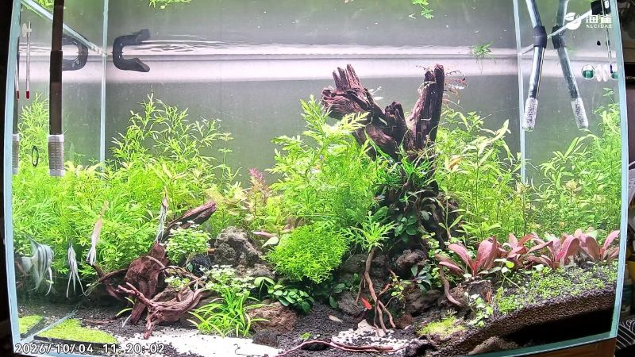
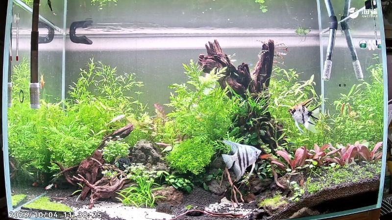

我的鱼儿朋友们
一缸真实的神仙鱼，每条鱼配一个有性格的 Agent。摄像头看它们怎么游，模型谨慎地估计它们的状态，再由鱼自己用聊天、每日近况和直播状态卡讲给你听。
这是一个陪伴产品，不是诊断工具：不判断健康，不确认是否进食，看不准时就说“不知道”。
素材是本缸的真实录像（4K 原片截取 20 秒，压缩到 720p），不是实时直播流。
它是
- 以真实鱼缸为锚点的虚拟陪伴：每条鱼都有名字、性格和说话方式
- 计划让每条鱼的状态卡约每小时更新，并标明每一条信息从哪里来
- 可以在网页里看鱼缸、和鱼聊天，之后再接入飞书
它不是
- 科学养鱼或健康诊断工具：不判断生病，不确认是否进食
- “读心术”：模型只给可见行为的谨慎估计，看不准就显示“未知”
- 用模拟模型冒充真鱼：模拟结论受代码保护，不能用在真实视频上
三层：看见、估计、开口
Agent 不直接看视频，也不自己猜心情。它只拿到一份标明来源的状态快照，在人格设定和说话守则的约束下组织语言。
嵌入接口：window.FishMoodBridge
当前是前端演示接口，不是已接通的后端。默认读取当前模式；也可显式指定 real / synthetic。真实模式没有逐鱼身份与状态，返回“未知”，不会拿模拟结果填空。
// 1. 真实模式：已知三条鱼，但逐鱼身份未绑定 await FishMoodBridge.getSnapshot('huaban', {domain:'real'}) // → { domain:'real', identity_bound:false, visible:[], // estimate:{ H:{label:'unknown',p:null}, S, E }, // tank:{source:'real_video_probe',fish_count:3,...} } // 2. 模拟实验：独立的模拟测试片段 await FishMoodBridge.getSnapshot('huaban', {domain:'synthetic'}) await FishMoodBridge.sendMessage('hongding', '今天吃饱了吗？', {domain:'synthetic'}) // → { domain:'synthetic', text, tags, snapshot_at } // 3. 当前是录像片段，不是直播流 FishMoodBridge.streamUrl // 'assets/real/clip_1200s.mp4'
花斑 稳重的老大哥
说话慢，爱讲道理，总说“别急”。
红顶 好奇的小话痨
精力旺盛，爱巡游，什么都想凑过去看。
蓝银 敏感的安静派
设定为敏感的安静派，说话很轻。
名字和性格是虚拟设定。真实视频里目前还无法稳定分辨这三条鱼，身份绑定要等逐鱼追踪做好。
看得到的 ≠ 已经做完的
截至 2026-10-08 的诚实清单。Demo 用来演示交互形态；真实数据接入是一步一步来的。
| 能力 | Demo 里的样子 | 真实状态 | 说明 |
|---|---|---|---|
| 直播画面 | 真实模式播放本缸 20 秒录像，并可查看抽帧 | 录像 | 有 80 分钟 4K 原片；还没接实时摄像头流 |
| 整缸画面变化 | 主页与陪伴页的曲线 | 真实数据 | 每 5 秒采样，共 959 个点；只反映画面变化，不针对某条鱼 |
| 逐鱼检测 / 身份 | — | 未开始 | 鱼缸已知只有三条鱼；视频里仍需逐鱼定位与遮挡处理，尚未把画面中的个体对应到三张人格卡 |
| H / S / E 估计 | 仅“模拟实验”中展示概率与状态 | 仅模拟 | 三个模型只在模拟鱼上训练和评估过，状态卡明确标注为“模拟” |
| 三鱼人格对话 | 仅“模拟实验”中开放网页对话 | 规则模板 | Demo 用模板回复，演示守则和来源标注；还没接 LLM |
| 飞书机器人 | — | 只留了接口 | FishMoodBridge 已定义；不连真实飞书，也不主动发消息 |
| 每小时更新 / 每日近况 | 手动切换时间 | 未开始 | 需要先有真实的逐鱼数据 |
| 3D 模拟回放 | webui/dist | 已有 | Three.js 模拟场景，可回放三个模型的预测 |
先模拟，再用真实视频验证
每一步都有一个可以检查的产出。前一步没站稳，就不往下走。
模拟研究：方法可不可行
构造“答案已知”的模拟鱼（2×2：饿/不饿 × 受惊/平静），对比 logistic、GAM、HMM 三个模型。
产出：189 个测试窗口上的完整评估；发现 H 与 S 存在歧义；建立“概率不到 0.7 就说未知”的门槛 → 算法建模页
真实视频探查：整缸级
读取 80 分钟 4K 录像，每 5 秒计算一次整缸画面变化。人工核对每个异常尖峰。
产出：整缸画面变化曲线；核对出的异常尖峰主要是有人靠近、机位跳变，不能归因于逐鱼行为。由此确认，下一步必须做逐鱼检测。
逐鱼检测与追踪
在真实画面上标注三条鱼的位置，训练或评估检测器；加上追踪处理遮挡，核对是否能稳定保持三条轨迹。
验收：人工抽查的身份保持率；遮挡时宁可输出“未知”，也不交换身份。
本缸基线与事件锚点
按本缸标定喂食区、躲藏区和水面区域，记录投喂和有人靠近等事件，为每条鱼建立行为基线。
验收：投喂前后行为变化在多天数据中可以重复出现。
真实数据上重评三个模型
用同一套 12 项特征，在真实轨迹上重新训练和评估。只把事件当作可核验的锚点，不当作心理标签。
验收：不沿用模拟阈值；“未知”的比例如实报告。
人格 Agent 上线
状态快照每小时更新，接入 LLM 人格回复，接入飞书机器人和每日近况。
验收：每句台词都能追溯到快照里的某个字段，或者明确标为角色演绎。
80 分钟录像里，最“热闹”的时刻都不是鱼造成的
指标是相隔 1 秒的两帧之间，水域里灰度变化超过 18 的像素比例。它只能看出“画面动了多少”，不能告诉我们是谁在动，更不能说明谁在想什么。
读数




来源：Fish_20261004_2.mp4，3840×2160，约 19.95 fps，95,660 帧，约 80 分钟。脚本：scripts/real_video_activity.py。包含人脸的帧未放到页面上。